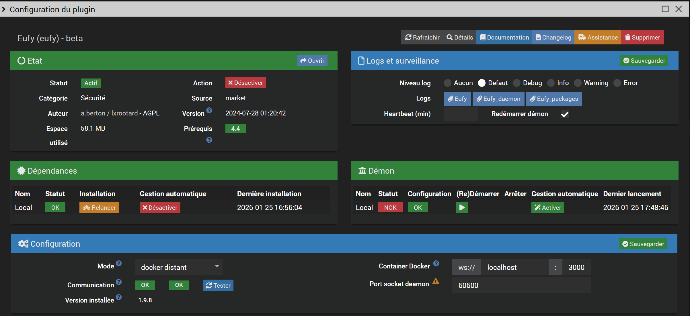
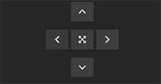
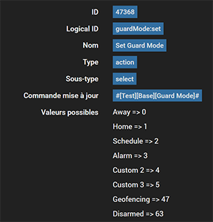

Install the plugin and its dependencies. You have a choice between local and remote modes for docker or lxc.
Note:
* Installing dependencies does NOT install the eufy-security-ws image.
eufy-security-ws container IP address and port, localhost:3000 by default60600 by default. Do not change this value unless you have a conflict with another plugineufy-security-ws container presence and its connection to the Eufy Cloud serviceNotes:
- The Eufy daemon will not start if the eufy-security-ws container cannot connect to the Eufy Cloud service.
- The installed image version (if it exists) is shown in the Installed version field

The local mode installation requires docker modules. They are now installed and configured automatically.
The plugin does not require the use of #plugin-docker2 but it is possible to import the generated data/docker-compose.yml file if you prefer to manage the image yourself with this plugin.
Additional parameters:
- Device: name of your phone in the Eufy app, used to connect to the Eufy Cloud server
- Username and password: it is recommended to create a dedicated user
- Target version: latest by default or the version you want
Docker image configuration post-installation:
eufy-security-ws imageeufy-security-ws service (relaunch if you change container parameters)eufy-security-ws imageeufy-security-ws image with the requested versionOnce the dependencies are installed, you can also use the eufy script available in resources
to install, verify and manage the eufy-security-ws image and test your cameras via command line:
$ ./eufy
usage: eufy [-h] [-d device] [-u url] action
-h show this help message and exit
action: { install|uninstall|upgrade|start|stop|restart|status|info|logs|test }
test optional arguments:
-d DEVICE device serial number
-u URL eufy service URL, default 127.0.0.1:3000
eufy status # check the image and container status
eufy info # check the image and container status (extended info)
eufy test # check if the container is connected to the eufy cloud
eufy logs # get the container logs

Use this if you have deployed the eufy-security-ws image on a remote docker or lxc.
Here are the files to adapt and copy to the remote server:
resources/docker-compose.yml
resources/eufy

Automatic detection and creation of devices.
Note:
Only certain models have been tested. The complete list of models that may work is available here.
If your model is on this list and does not work as expected, you can send me the result of the eufy test command. See Unsupported Devices or Commands for more info.
Updates values for all active devices. You can also update each device with the Refresh command

List and status of active devices.

Commands are divided between Station and Camera categories.
The device image can be modified if necessary.
The Other Commands tab groups presence, the Refresh command and additional commands.
The following additional commands can be created:

Warning! These commands may or may not work depending on the model.

It is possible to rename dropdown menu labels. For example, Custom1 to Alarm for the guardMode command. The format is as follows:
0|Away;1|Home;2|Schedule;3|Alarm;4|Custom 2;5|Custom 3;47|Geofencing;63|Disarmed
Warning! Do not modify the values.
If my custom widgets are installed, they will be automatically applied: snapshot, dropdown list, alarm mode, switch. For more information see here.


The Last Camera Picture command contains the URL of the image on the server
You can use my ImageViewer widget.
Remember to enable image notifications in your device settings from the Eufy app otherwise snapshots will not be updated
The RTSP stream works in the Camera plugin or an application like VLC.
It must be enabled/disabled via the equipment commands RTSP Stream On and RTSP Stream Off.
Depending on the devices, the login/password is either your Eufy account or one generated by the application on the page
Settings > General > Storage > NAS(RTSP)
The IP is either the base or the camera
live0..liven indicate the camera number, see this screenshot:

See here and there according to your model
For local mode, the docker prerequisites are automatically installed with the Setup Docker > Install button. A python_venv is also automatically installed for debian 12+
The Docker image installation failed or the container is not starting. Make sure the image is properly installed.
Note:
@bropat no longer provides armv7 images (Pi3), the last available version is 1.7.1.
This means that authentication to the Eufy cloud has failed or Eufy is preventing connection for security reasons (e.g., too many login errors). Verify that your Eufy username, password, and device name are correct.
Warining 2FA is not supported.
Check the Docker image status, container, and cloud connection (see below).
If the Docker image is properly installed, its version will be displayed on the installed version line.
Both the container status and cloud connection indicators should be green (see below).
Use the eufy script in resources for more information.
See the Local Mode (Expert) section for more details.
Apostrophes and quotes are not supported in equipment names.
Make sure you are using the correct version of the eufy-security-ws image.
The installed version is displayed on the plugin configuration page when you click the Test button.
If you have updated the plugin, try uninstalling and then reinstalling the image and restarting the container.
These are not actions but settings that only affect the device's behavior on the next detection (e.g., the flash will turn on during the next event).
Enable snapshots in the Eufy app: Device > Settings > Notification
In case of problems, check the connection with the container via the eufy command available in resources:
$ cd /var/www/html/plugins/eufy
$ ./resources/eufy test
You should get the following output:
{"type":"result","success":true,"result":{"state":{"driver":{"version":"2.4.0","connected":true,"pushConnected":true}
Note: connected and pushConnected must be true
Check if the device and/or command exists
$ cd /var/www/html/plugins/eufy
$ ./resources/eufy -d device_serial test
Note: device_serial is your device identifier starting with Txxx
Visit the Jeedom community forum